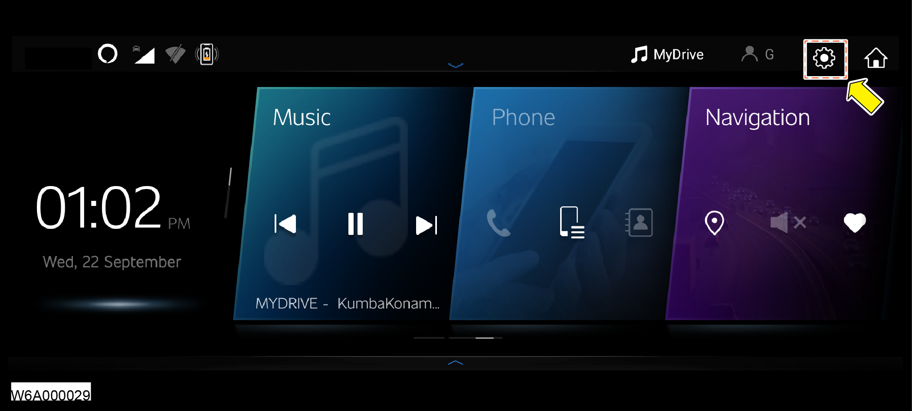
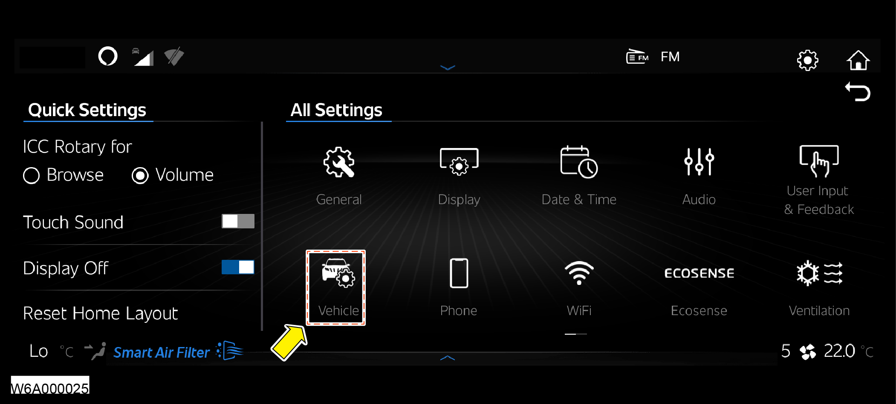
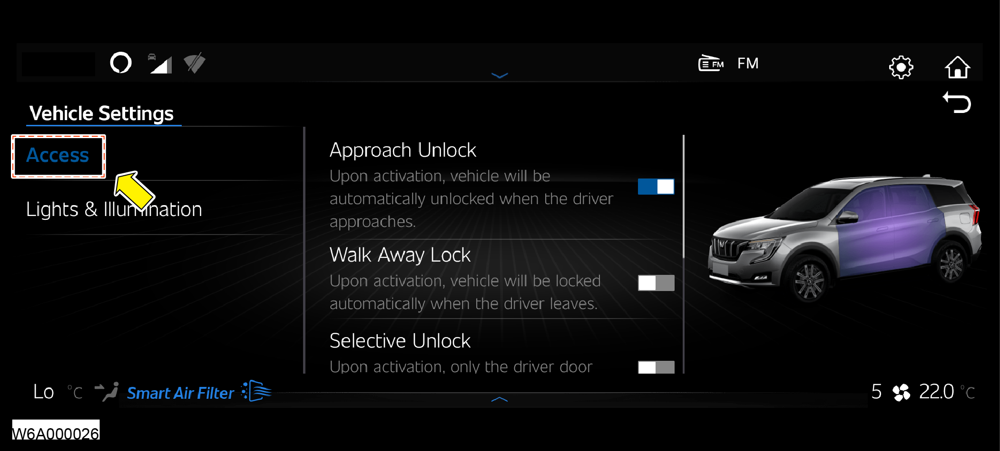
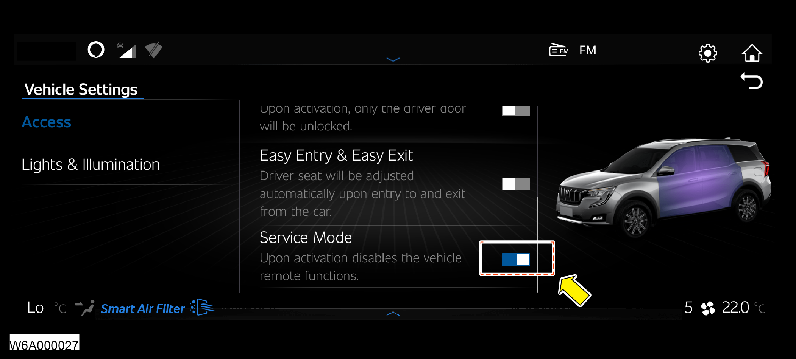
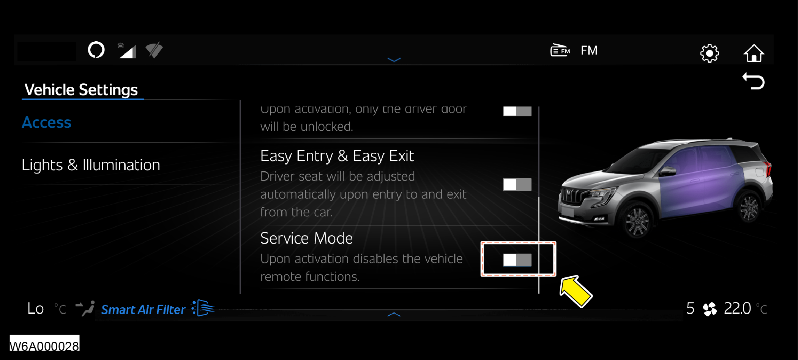

|
Applicable Vehicle Variants |
|||||
|---|---|---|---|---|---|
|
AX3
|
AX5
|
AX7
|
AX7 L
|
AX7 C
|
AX7 T
|
| 1. | Switch ON the Ignition. |
| 2. | Click the “Setting” icon (Top Right Side corner) in the AdrenoX screen.  |
| 3. | Click the “Vehicle” icon in the All Settings screen  |
| 4. | In the Vehicle Settings screen, click the Access and view the list of functions.  |
| 5. | Scroll down to locate the Service Mode function and slide the button left to right to enable the Service Mode.  |
| 6. | On completing service activity, disable the Service Mode by sliding the button right to left and hand back the vehicle.  |